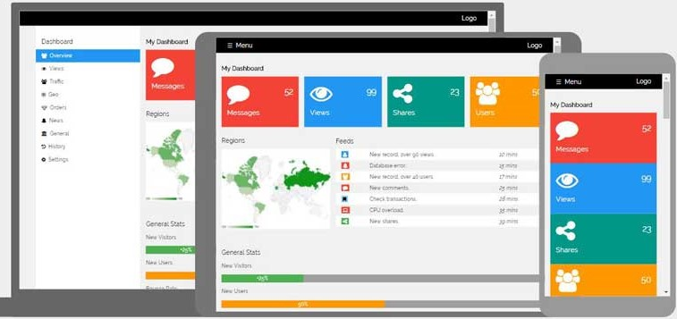
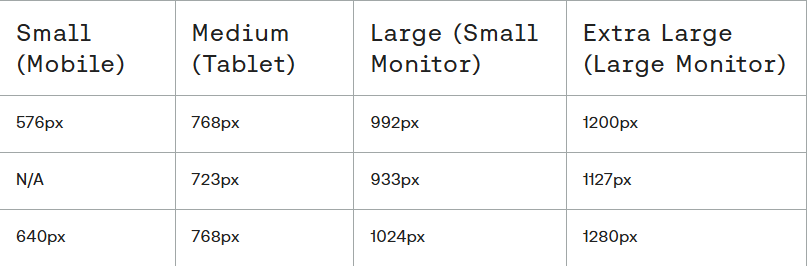

Responsywne strony Internetowe
Responsywność to kluczowy element strony internetowej. Ponieważ w dzisiejszych czasach nie tak jak dawjniej Internet przegląda się na urządzeniach mniejszych jak telefony i większych jak telewizory. Ogólne założenie responsywnego designu jest to, aby strona na każdym urządzeniu działała tak samo i wyglądałą podobnie.
Spis treści
Czym jest responsywność
Responsywność to nic innego jak cecha strony internetowej, która na wielu urządzeniach działa identycznie i wygląda podobnie. Największymi wyzwaniami w tworzeniu responsywnej strony, jest dopasowanie się do zmieniającej się szerokości urządzeń. Responsywna strona działa tak samo, bez przepełnień i przewijania bocznego zarówno na smartwatchu jak i 70' telewizorze. Aby tworzyć strony responsywne trzeba porzucić jednostki statyczne takie jak np. px, a zacząć używać vw czy em/rem. Aby strona działałą responsywnie jej design musi być przystosowany do zmian szerokości i układów z zachowaniem funkcjonalności.
Podstawowe metody tworzenia responsywnych stron, jednostki
Pierwszym warunkiem do stworzenia responsywnej strony jest przemyślenie jak nasza strona powinna się dostosować do deficytu miejsca.
Musimy jednak pamiętać, aby elementy nie stawały się za małe dla użytkownika, i nie rozlewały się ponad szerokość urządzenia.
Kolejnym ważnym elementem, jest opanowanie metod tworzenia układów takich jak grid czy flexbox. Ponieważ pozwalają one na stworzenie układu
dostosowującego się do urządzenia.
Dobór jednostek jest kolejnym ważnym krokiem, aby stworzyć stronę, ważna jest także jednolitość w używaniu ich, ponieważ ułatwia to pracę z kodem.
Jednostki dzielą się na względne i bezwzględne. Tworząc układ responsywny będziemy nakładać nacisk na używnie jednostek względnych.
Oto wypisane jednostki według tego podziału z wyjaśnieniem.
- Piksel (px)
- Najpopularniejsza jednostka bezwzględna. 1 piksel odpowiada jednemu punktowi na ekranie. Stosowana do elementów graficznych, ikon, obrazków. Przydatna do drukowania.
- Centymetr (cm)
- 1 centymetr odpowiada 10 milimetrom lub 0,3937 cala. Jednostka bezwzględna stosowana w układach stron, formularzach i broszurach.
- Milimetr (mm)
- 1 milimetr odpowiada 0,1 centymetra lub 0,03937 cala. Jednostka bezwzględna stosowana w drukowaniu i precyzyjnych układach.
- Cal (in)
- 1 cal odpowiada 2,54 centymetra lub 10 milimetrom. Jednostka bezwzględna stosowana w krajach anglosaskich w drukowaniu i układach stron.
- Punkt (pt)
- 1 punkt odpowiada 0,072 cala lub 1/72 cala. Jednostka bezwzględna stosowana w typografii cyfrowej i drukowaniu.
- Pica (pc)
- 1 pica odpowiada 12 punktom lub 0,1667 cala. Jednostka bezwzględna stosowana w typografii cyfrowej i drukowaniu.
A teraz trochę o jednostkach względnych:
- Procent (%)
- Rozmiar elementu jako procent rozmiaru nadrzędnego elementu. Na przykład `width: 50%` oznacza: element będzie miał szerokość równą połowie szerokości swojego elementu nadrzędnego.
- Em (em)
- Rozmiar elementu jako mnożnik domyślnej wielkości czcionki. Na przykład `font-size: 1.5em` oznacza: czcionka elementu będzie o 50% większa od domyślnej wielkości czcionki.
- Rem (rem)
- Rozmiar elementu jako mnożnik rozmiaru czcionki elementu głównego (html). Na przykład `font-size: 1.5rem` oznacza: czcionka elementu będzie o 50% większa od rozmiaru czcionki elementu html.
- Viewport (vw, vh)
- Rozmiar elementu jako procent szerokości (vw) lub wysokości (vh) okna przeglądarki. Na przykład `width: 50vw` oznacza: element będzie miał szerokość równą połowie szerokości okna przeglądarki.
- Vmax
- Wybiera maksymalną wartość viewport (wysokość lub szerokość) Na przykład 'height:50vmax' oznacza 50% większego elementu viewport (szerokości lub wysokości)
- Ex (ex)
- Wysokość małej litery "x" w danej czcionce.
- Ch (ch)
- Szerokość średniej litery w danej czcionce.
@media
@media w css to element wysyłający zapytanie do przeglądarki o szerokość urządzenia (i inne rzeczy ale o nich nie tutaj) i stosujący style przypisane do tego @media. Składnia elementu @media wygląda tak:
@media (min-width: 769px){ /* ten zapis mówi nam jeśli urządzenie ma przynajmniej 769px szerokości, stosuj te style*/
atrybuty:css;
}
/*lub*/
@media (max-width: x){
atrybuty:css;
}
/*lub*/
@media (min-width: y) and (max-width: x){/*Trzeba pamiętać że tutaj oba warunki muszą być prawdziwe*/
}
Korzystajac z @media warto znać tzw. breakpointy danych urządzeń. Są to:
Należy pamiętać aby @media umieszczać na koću dokumentu css, aby nie zostawały nadpisane przez późniejsze style.
Pozwól przeglądarce decydować
W nowoczesnym css-ie stosuje się coraz częściej takie właściwości jak max-width, max-height czy np. funkcje clamp(), min() czy max(). Pozwalaja one na
Uproszczenie tworzenia responsywnej strony i nie używanie tag dużo zapytań @media. Pomagać mogą też narzędzia typu flexbox z właściwościami np. flex-wrap. Przydatne też są wartości auto,
fit-conent czy np auto-fit, przydatna też jest właściwość box-sizing.
Jak widać css dostarcza nam wiele narzędzi, aby ułatwić tworzenie responsywnych stron internetowych, trzeba się tylko zagłębić i je poznać.